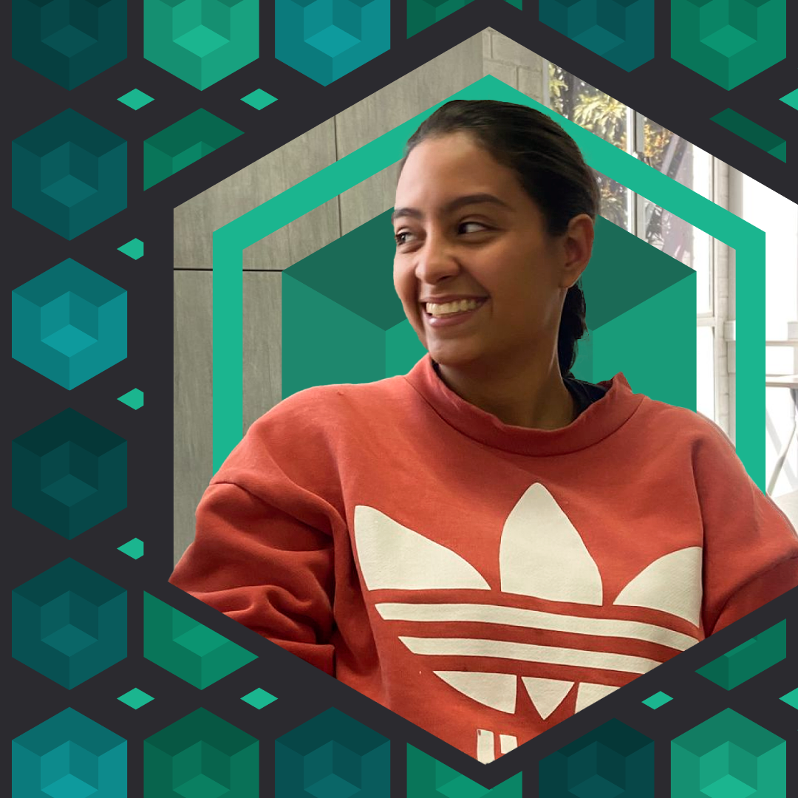
Soy Isabela García Ángel, Diseñadora de Experiencias de Usuario (UX) con formación en Ingeniería de Diseño en Entretenimiento Digital. Mi pasión es crear productos digitales que resuelvan problemas reales, combinando investigación de usuarios, diseño intuitivo y una estética consciente.
Creo en las interfaces como puentes entre las necesidades humanas y la tecnología. Por eso, me especializo en diseñar flujos de usuario fluidos, sistemas de diseño escalables y experiencias emocionalmente resonantes, siempre basados en datos y pruebas con usuarios.
Cuando no estoy diseñando, exploro nuevas formas de contar historias visuales o aprendo sobre psicología cognitiva para aplicar esos insights a mis proyectos.
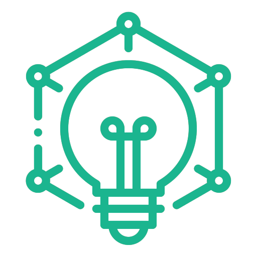
Un enfoque centrado en el usuario para resolver problemas creativamente, dividido en 5 etapas: empatizar, definir, idear, prototipar y probar.
Lo apliqué en el desarrollo de una app para un asistente virtual que apoya la comprensión y el cuidado del Alzheimer, enfocándome en las necesidades emocionales y cognitivas de los usuarios.
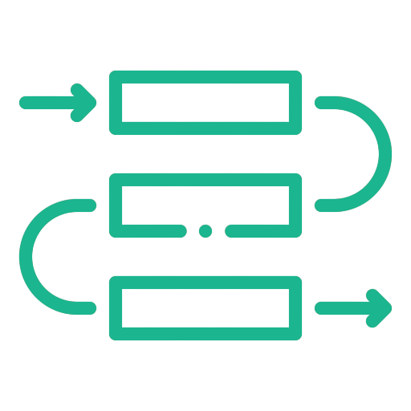
Un marco ágil para la gestión de proyectos que prioriza la colaboración, el trabajo en sprints y entregas iterativas de valor.
“Diseñar no solo es resolver problemas, es comprender profundamente para crear soluciones con sentido.”
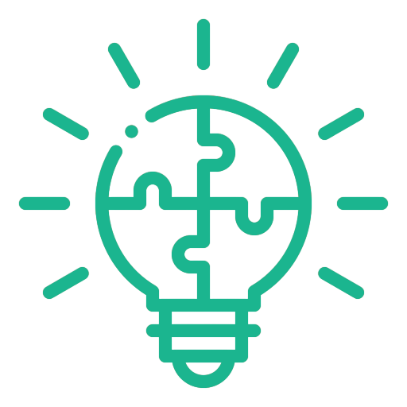
Una metodología ágil para el diseño de experiencias centrada en aprender rápidamente, validar hipótesis y reducir desperdicios mediante experimentos.
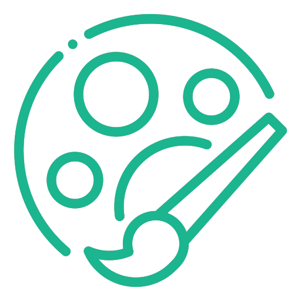
Proceso intensivo de 5 días para resolver problemas y validar ideas mediante diseño, prototipos y pruebas con usuarios.
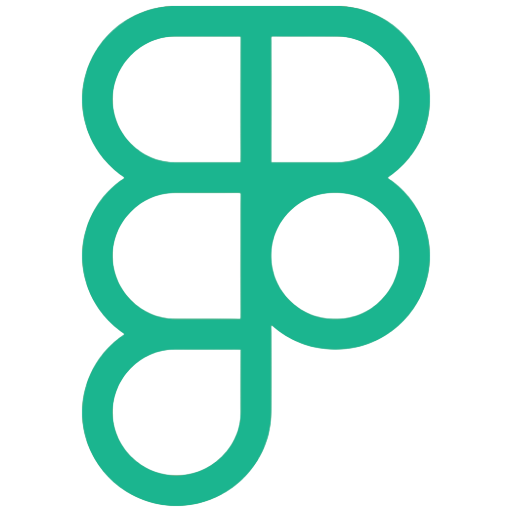
Utilizado para el diseño de interfaces y experiencias de usuario, prototipando de manera interactiva aplicaciones.
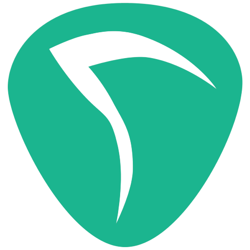
Usado para la edición, grabación y mezcla de audio en la producción de música, bandas sonoras y efectos de sonido.
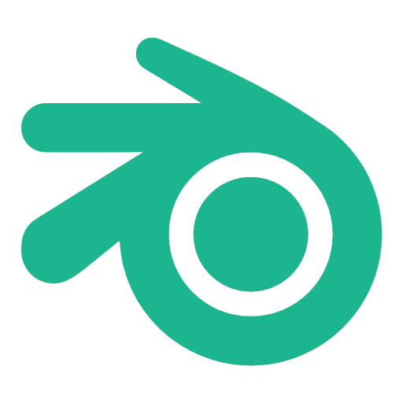
Aprendido para el modelado, esculpido y texturizado 3D. Y procesos de animación, rigging y simulación de efectos visuales.
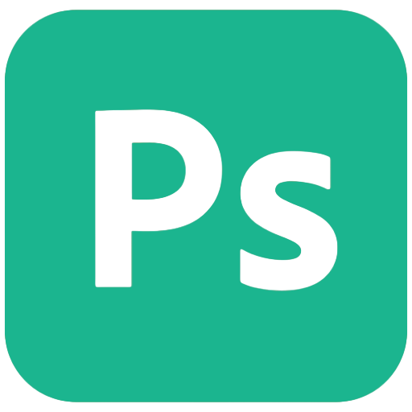
Usado para la edición y retoque avanzado de imágenes, la creación de gráficos digitales, banners, elementos visuales y diseño de mockups y arte conceptual.
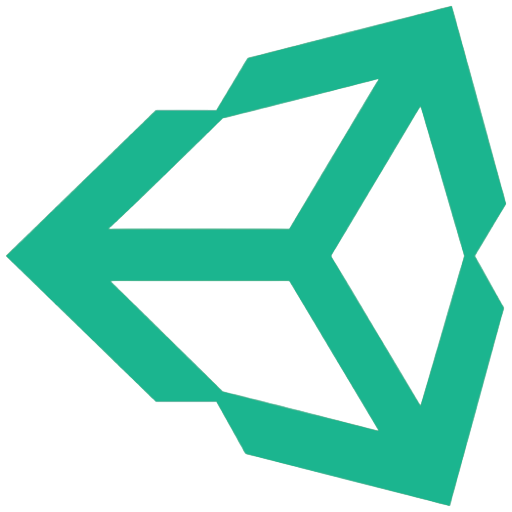
Implementado para el desarrollo de aplicaciones y simulaciones interactivas y experiencias de realidad virtual y aumentada.
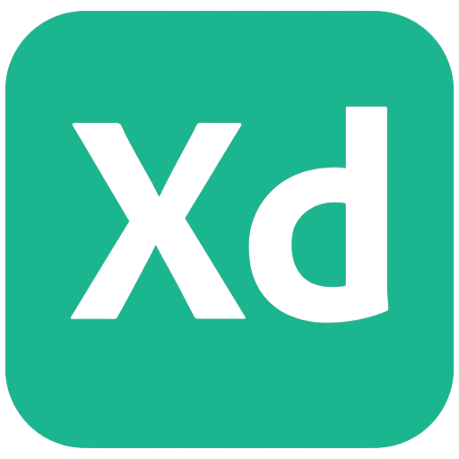
Utilizado para la creación de prototipos interactivos y wireframes, en el diseño de interfaces de usuario para aplicaciones móviles y web.